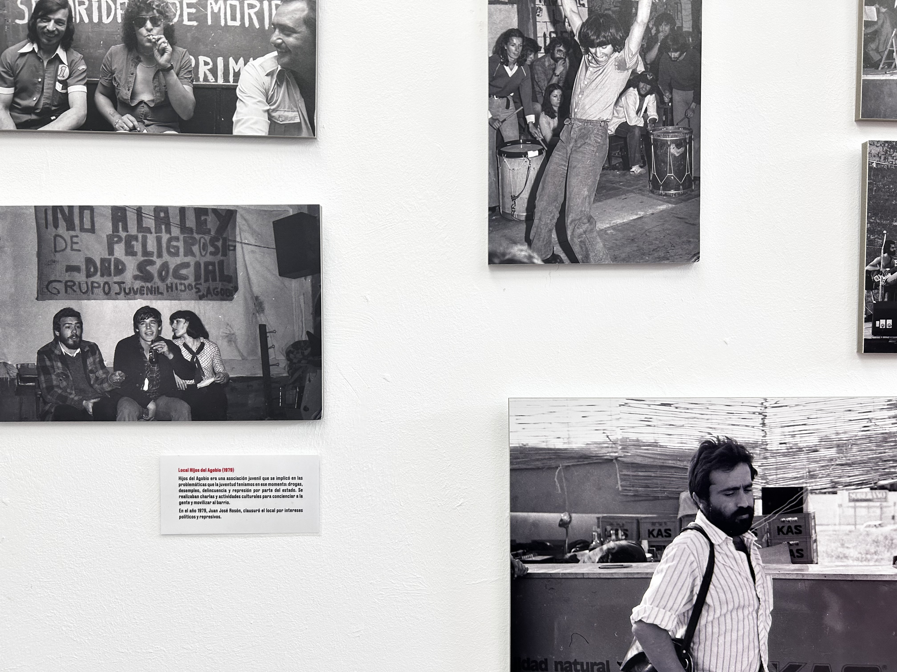

BARRIO(S)
El proyecto comisarial Barrios(s) nace en 2022 con el objetivo de explorar el concepto de barrio como constructor de comunidad y cultura. Barrios(s) busca reivindicar, repensar y poner en valor nuestros espacios de vida a través de exposiciones y propuestas contemporáneas que permitan reforzar la identificación de los barrios como lugares propios.
El propósito es reconectar con el imaginario popular del barrio a través de miradas artísticas y propuestas contemporáneas que nos ayuden a comprender mejor dónde vivimos y cómo nos relacionamos con nuestros entornos. Entender lo que se ha construido a través de los barrios, mirar al pasado para pensar el futuro y acercarnos, desde la cultura, a las situaciones y transformaciones que atraviesan nuestros territorios en el presente.
El proyecto vincula a comisarias, artistas y mediadoras a través de una suerte de comisariado pedagógico que no termina en una exposición sino que sigue construyéndose a través de actividades como procesos de investigación en activo.
Desde su creación hasta el 2026 se han desarrollado 8 proyectos vinculados a este programa en los cuales se exploran estas ideas a través de la fotografía, los mapas y la cartografía, la arquitectura, diversos objetos vinculados a fiestas populares o artefactos móviles.